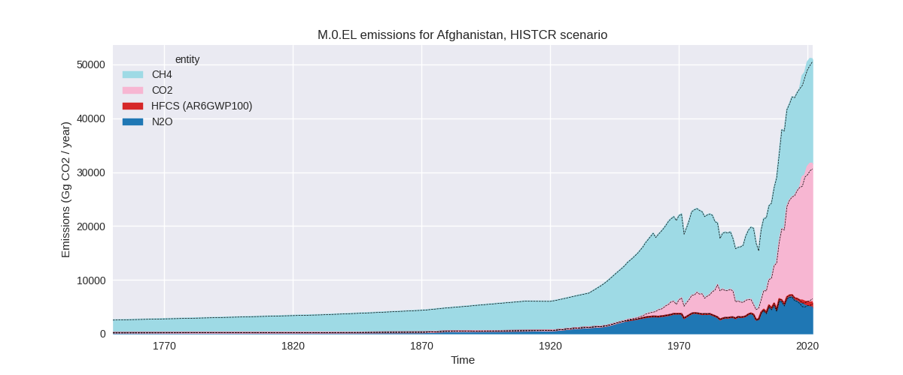

Changes in PRIMAP-hist v2.5.1_final compared to v2.5_final for Afghanistan
2024-02-29
Johannes Gütschow
Change analysis for Afghanistan for PRIMAP-hist v2.5.1_final compared to v2.5_final
Overview over emissions by sector and gas
The following figures show the aggregate national total emissions excluding LULUCF AR6GWP100 for the country reported priority scenario. The dotted linesshow the v2.5_final data.


The following figures show the aggregate national total emissions excluding LULUCF AR6GWP100 for the third party priority scenario. The dotted linesshow the v2.5_final data.
Overview over changes
In the country reported priority scenario we have the following changes for aggregate Kyoto GHG and national total emissions excluding LULUCF (M.0.EL):
- Emissions in 2022 have changed by 0.8%% (394.02 Gg CO2 / year)
- Emissions in 1990-2022 have changed by 0.6%% (170.07 Gg CO2 / year)
In the third party priority scenario we have the following changes for aggregate Kyoto GHG and national total emissions excluding LULUCF (M.0.EL):
- Emissions in 2022 have changed by 7.3%% (2485.96 Gg CO2 / year)
- Emissions in 1990-2022 have changed by 3.8%% (859.90 Gg CO2 / year)
Most important changes per scenario and time frame
In the country reported priority scenario the following sector-gas combinations have the highest absolute impact on national total KyotoGHG (AR6GWP100) emissions in 2022 (top 5):
- 1: 1.A, CO2 with 1713.68 Gg CO2 / year (7.2%)
- 2: M.AG.ELV, N2O with -566.89 Gg CO2 / year (-11.6%)
- 3: 3.A, CH4 with -565.93 Gg CO2 / year (-3.9%)
- 4: 1.A, CH4 with -99.52 Gg CO2 / year (-10.8%)
- 5: 1.A, N2O with -89.26 Gg CO2 / year (-30.6%)
In the country reported priority scenario the following sector-gas combinations have the highest absolute impact on national total KyotoGHG (AR6GWP100) emissions in 1990-2022 (top 5):
- 1: 1.A, CO2 with 195.33 Gg CO2 / year (2.0%)
- 2: 1.A, N2O with -7.41 Gg CO2 / year (-5.4%)
- 3: 3.A, CH4 with -4.59 Gg CO2 / year (-0.0%)
- 4: 1.A, CH4 with -4.56 Gg CO2 / year (-0.9%)
- 5: M.AG.ELV, N2O with -3.86 Gg CO2 / year (-0.1%)
In the third party priority scenario the following sector-gas combinations have the highest absolute impact on national total KyotoGHG (AR6GWP100) emissions in 2022 (top 5):
- 1: 1.A, CO2 with 4292.95 Gg CO2 / year (54.5%)
- 2: M.AG.ELV, N2O with -557.08 Gg CO2 / year (-12.9%)
- 3: 1.B.1, CH4 with -528.21 Gg CO2 / year (-35.4%)
- 4: 3.A, CH4 with -471.72 Gg CO2 / year (-4.1%)
- 5: M.AG.ELV, CO2 with -150.32 Gg CO2 / year (-76.5%)
In the third party priority scenario the following sector-gas combinations have the highest absolute impact on national total KyotoGHG (AR6GWP100) emissions in 1990-2022 (top 5):
- 1: 1.A, CO2 with 976.86 Gg CO2 / year (22.9%)
- 2: 1.B.2, CH4 with -50.72 Gg CO2 / year (-42.6%)
- 3: 1.B.1, CH4 with -29.57 Gg CO2 / year (-5.9%)
- 4: 2, CO2 with -21.46 Gg CO2 / year (-10.0%)
- 5: M.AG.ELV, N2O with -5.83 Gg CO2 / year (-0.2%)
Notes on data changes
Here we list notes explaining important emissions changes for the country. ’' means that the following text only applies to the TP time series, while means that it only applies to the CR scenario. Otherwise the note applies to both scenarios.
- 1.A, CO2: CDIAC 2023 shows increasing emissions after 2014 while CDIAC 2020 shows decreasing emissions. This leads to higher post-2014 emissions. The higher CDIAC emissions lead to higher emissions post 2017.
Changes by sector and gas
For each scenario and time frame the changes are displayed for all individual sectors and all individual gases. In the sector plot we use aggregate Kyoto GHGs in AR6GWP100. In the gas plot we usenational total emissions without LULUCF. ## country reported scenario
2022
1990-2022
third party scenario
2022
1990-2022
Detailed changes for the scenarios:
country reported scenario (HISTCR):
Most important changes per time frame
For 2022 the following sector-gas combinations have the highest absolute impact on national total KyotoGHG (AR6GWP100) emissions in 2022 (top 5):
- 1: 1.A, CO2 with 1713.68 Gg CO2 / year (7.2%)
- 2: M.AG.ELV, N2O with -566.89 Gg CO2 / year (-11.6%)
- 3: 3.A, CH4 with -565.93 Gg CO2 / year (-3.9%)
- 4: 1.A, CH4 with -99.52 Gg CO2 / year (-10.8%)
- 5: 1.A, N2O with -89.26 Gg CO2 / year (-30.6%)
For 1990-2022 the following sector-gas combinations have the highest absolute impact on national total KyotoGHG (AR6GWP100) emissions in 1990-2022 (top 5):
- 1: 1.A, CO2 with 195.33 Gg CO2 / year (2.0%)
- 2: 1.A, N2O with -7.41 Gg CO2 / year (-5.4%)
- 3: 3.A, CH4 with -4.59 Gg CO2 / year (-0.0%)
- 4: 1.A, CH4 with -4.56 Gg CO2 / year (-0.9%)
- 5: M.AG.ELV, N2O with -3.86 Gg CO2 / year (-0.1%)
Changes in the main sectors for aggregate KyotoGHG (AR6GWP100) are
- 1: Total sectoral emissions in 2022 are 26586.76 Gg
CO2 / year which is 52.2% of M.0.EL emissions. 2022 Emissions have
changed by 5.9% (1471.44 Gg CO2 /
year). 1990-2022 Emissions have changed by 1.7% (178.08 Gg CO2 / year). For 2022 the
changes per gas
are:
The changes come from the following subsectors:- 1.A: Total sectoral emissions in 2022 are 26527.76
Gg CO2 / year which is 99.8% of category 1 emissions. 2022 Emissions
have changed by 6.1% (1524.90 Gg CO2
/ year). 1990-2022 Emissions have changed by 1.7% (183.36 Gg CO2 / year). For 2022 the
changes per gas
are:
There is no subsector information available in PRIMAP-hist. - 1.B.1: Total sectoral emissions in 2022 are 52.76
Gg CO2 / year which is 0.2% of category 1 emissions. 2022 Emissions have
changed by -48.4% (-49.53 Gg CO2 /
year). 1990-2022 Emissions have changed by -8.9% (-4.93 Gg CO2 / year). For 2022 the
changes per gas
are:
For 1990-2022 the changes per gas are:
There is no subsector information available in PRIMAP-hist. - 1.B.2: Total sectoral emissions in 2022 are 6.24 Gg
CO2 / year which is 0.0% of category 1 emissions. 2022 Emissions have
changed by -38.6% (-3.93 Gg CO2 /
year). 1990-2022 Emissions have changed by -1.9% (-0.35 Gg CO2 / year). For 2022 the
changes per gas
are:
There is no subsector information available in PRIMAP-hist.
- 1.A: Total sectoral emissions in 2022 are 26527.76
Gg CO2 / year which is 99.8% of category 1 emissions. 2022 Emissions
have changed by 6.1% (1524.90 Gg CO2
/ year). 1990-2022 Emissions have changed by 1.7% (183.36 Gg CO2 / year). For 2022 the
changes per gas
are:
- 2: Total sectoral emissions in 2022 are 1156.76 Gg CO2 / year which is 2.3% of M.0.EL emissions. 2022 Emissions have changed by 0.1% (1.48 Gg CO2 / year). 1990-2022 Emissions have changed by 0.0% (0.13 Gg CO2 / year).
- M.AG: Total sectoral emissions in 2022 are 21385.95
Gg CO2 / year which is 42.0% of M.0.EL emissions. 2022 Emissions have
changed by -5.0% (-1116.76 Gg CO2 /
year). 1990-2022 Emissions have changed by -0.1% (-9.29 Gg CO2 / year). For 2022 the
changes per gas
are:
The changes come from the following subsectors:- 3.A: Total sectoral emissions in 2022 are 14094.68
Gg CO2 / year which is 65.9% of category M.AG emissions. 2022 Emissions
have changed by -3.9% (-571.12 Gg
CO2 / year). 1990-2022 Emissions have changed by -0.0% (-4.42 Gg CO2 / year). For 2022 the
changes per gas
are:

There is no subsector information available in PRIMAP-hist. - M.AG.ELV: Total sectoral emissions in 2022 are
7291.27 Gg CO2 / year which is 34.1% of category M.AG emissions. 2022
Emissions have changed by -7.0%
(-545.65 Gg CO2 / year). 1990-2022 Emissions have changed by -0.1% (-4.87 Gg CO2 / year). For 2022 the
changes per gas
are:
There is no subsector information available in PRIMAP-hist.
- 3.A: Total sectoral emissions in 2022 are 14094.68
Gg CO2 / year which is 65.9% of category M.AG emissions. 2022 Emissions
have changed by -3.9% (-571.12 Gg
CO2 / year). 1990-2022 Emissions have changed by -0.0% (-4.42 Gg CO2 / year). For 2022 the
changes per gas
are:
- 4: Total sectoral emissions in 2022 are 1842.95 Gg
CO2 / year which is 3.6% of M.0.EL emissions. 2022 Emissions have
changed by 2.1% (37.86 Gg CO2 /
year). 1990-2022 Emissions have changed by 0.1% (1.15 Gg CO2 / year). For 2022 the
changes per gas
are:
- 5: No data
third party scenario (HISTTP):
Most important changes per time frame
For 2022 the following sector-gas combinations have the highest absolute impact on national total KyotoGHG (AR6GWP100) emissions in 2022 (top 5):
- 1: 1.A, CO2 with 4292.95 Gg CO2 / year (54.5%)
- 2: M.AG.ELV, N2O with -557.08 Gg CO2 / year (-12.9%)
- 3: 1.B.1, CH4 with -528.21 Gg CO2 / year (-35.4%)
- 4: 3.A, CH4 with -471.72 Gg CO2 / year (-4.1%)
- 5: M.AG.ELV, CO2 with -150.32 Gg CO2 / year (-76.5%)
For 1990-2022 the following sector-gas combinations have the highest absolute impact on national total KyotoGHG (AR6GWP100) emissions in 1990-2022 (top 5):
- 1: 1.A, CO2 with 976.86 Gg CO2 / year (22.9%)
- 2: 1.B.2, CH4 with -50.72 Gg CO2 / year (-42.6%)
- 3: 1.B.1, CH4 with -29.57 Gg CO2 / year (-5.9%)
- 4: 2, CO2 with -21.46 Gg CO2 / year (-10.0%)
- 5: M.AG.ELV, N2O with -5.83 Gg CO2 / year (-0.2%)
Changes in the main sectors for aggregate KyotoGHG (AR6GWP100) are
- 1: Total sectoral emissions in 2022 are 13451.92 Gg
CO2 / year which is 36.8% of M.0.EL emissions. 2022 Emissions have
changed by 37.0% (3632.53 Gg CO2 /
year). 1990-2022 Emissions have changed by 17.6% (894.75 Gg CO2 / year). For 2022 the
changes per gas
are:

For 1990-2022 the changes per gas are:
The changes come from the following subsectors:- 1.A: Total sectoral emissions in 2022 are 12428.98
Gg CO2 / year which is 92.4% of category 1 emissions. 2022 Emissions
have changed by 52.6% (4285.92 Gg
CO2 / year). 1990-2022 Emissions have changed by 22.1% (979.92 Gg CO2 / year). For 2022 the
changes per gas
are:
For 1990-2022 the changes per gas are:
There is no subsector information available in PRIMAP-hist. - 1.B.1: Total sectoral emissions in 2022 are 984.32
Gg CO2 / year which is 7.3% of category 1 emissions. 2022 Emissions have
changed by -36.3% (-561.81 Gg CO2 /
year). 1990-2022 Emissions have changed by -6.3% (-32.43 Gg CO2 / year). For 2022 the
changes per gas
are:

For 1990-2022 the changes per gas are:
There is no subsector information available in PRIMAP-hist. - 1.B.2: Total sectoral emissions in 2022 are 38.62
Gg CO2 / year which is 0.3% of category 1 emissions. 2022 Emissions have
changed by -70.3% (-91.58 Gg CO2 /
year). 1990-2022 Emissions have changed by -40.2% (-52.73 Gg CO2 / year). For 2022
the changes per gas
are:
For 1990-2022 the changes per gas are:
There is no subsector information available in PRIMAP-hist.
- 1.A: Total sectoral emissions in 2022 are 12428.98
Gg CO2 / year which is 92.4% of category 1 emissions. 2022 Emissions
have changed by 52.6% (4285.92 Gg
CO2 / year). 1990-2022 Emissions have changed by 22.1% (979.92 Gg CO2 / year). For 2022 the
changes per gas
are:
- 2: Total sectoral emissions in 2022 are 1241.53 Gg
CO2 / year which is 3.4% of M.0.EL emissions. 2022 Emissions have
changed by -1.7% (-20.92 Gg CO2 /
year). 1990-2022 Emissions have changed by -4.0% (-21.47 Gg CO2 / year). For
1990-2022 the changes per gas
are:

- M.AG: Total sectoral emissions in 2022 are 15739.72
Gg CO2 / year which is 43.1% of M.0.EL emissions. 2022 Emissions have
changed by -6.5% (-1095.47 Gg CO2 /
year). 1990-2022 Emissions have changed by -0.1% (-12.47 Gg CO2 / year). For 2022 the
changes per gas
are:
The changes come from the following subsectors:- 3.A: Total sectoral emissions in 2022 are 11283.74
Gg CO2 / year which is 71.7% of category M.AG emissions. 2022 Emissions
have changed by -4.1% (-477.78 Gg
CO2 / year). 1990-2022 Emissions have changed by -0.1% (-5.34 Gg CO2 / year). For 2022 the
changes per gas
are:
There is no subsector information available in PRIMAP-hist. - M.AG.ELV: Total sectoral emissions in 2022 are
4455.99 Gg CO2 / year which is 28.3% of category M.AG emissions. 2022
Emissions have changed by -12.2%
(-617.68 Gg CO2 / year). 1990-2022 Emissions have changed by -0.2% (-7.13 Gg CO2 / year). For 2022 the
changes per gas
are:
There is no subsector information available in PRIMAP-hist.
- 3.A: Total sectoral emissions in 2022 are 11283.74
Gg CO2 / year which is 71.7% of category M.AG emissions. 2022 Emissions
have changed by -4.1% (-477.78 Gg
CO2 / year). 1990-2022 Emissions have changed by -0.1% (-5.34 Gg CO2 / year). For 2022 the
changes per gas
are:
- 4: Total sectoral emissions in 2022 are 5977.27 Gg CO2 / year which is 16.4% of M.0.EL emissions. 2022 Emissions have changed by -0.5% (-31.30 Gg CO2 / year). 1990-2022 Emissions have changed by -0.0% (-0.95 Gg CO2 / year).
- 5: Total sectoral emissions in 2022 are 98.27 Gg CO2 / year which is 0.3% of M.0.EL emissions. 2022 Emissions have changed by 1.2% (1.12 Gg CO2 / year). 1990-2022 Emissions have changed by 0.1% (0.03 Gg CO2 / year).